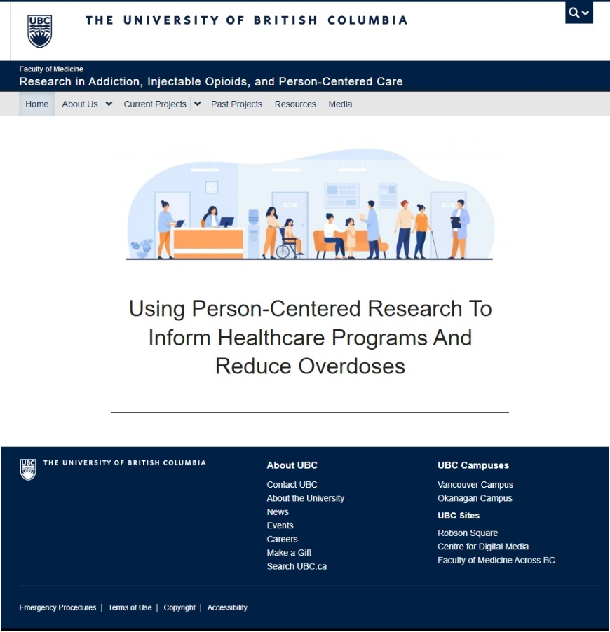

WordPress Website
Project Description
I created this website to provide stakeholders with information and updates related to an ongoing research project. The website was created using WordPress and the layout was designed to effectively communicate the research teams updates while also complying with the standards set by the projects overarching institutional requirements. Best practices in search engine optimization and Google Analytics were used to increase and monitor website traffic.
Skills + Tools Used
- WordPress
- HTML/CSS
- Search engine optimization
- Google analytics
- Information architecture